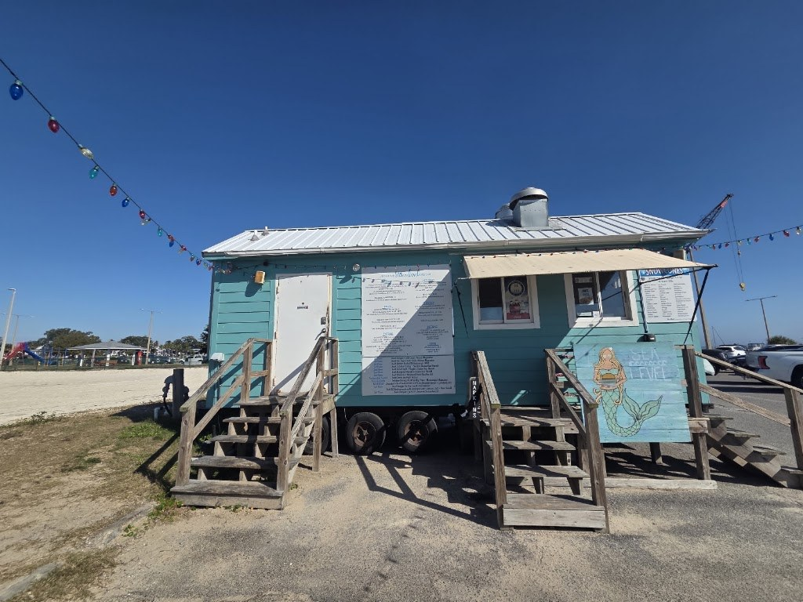
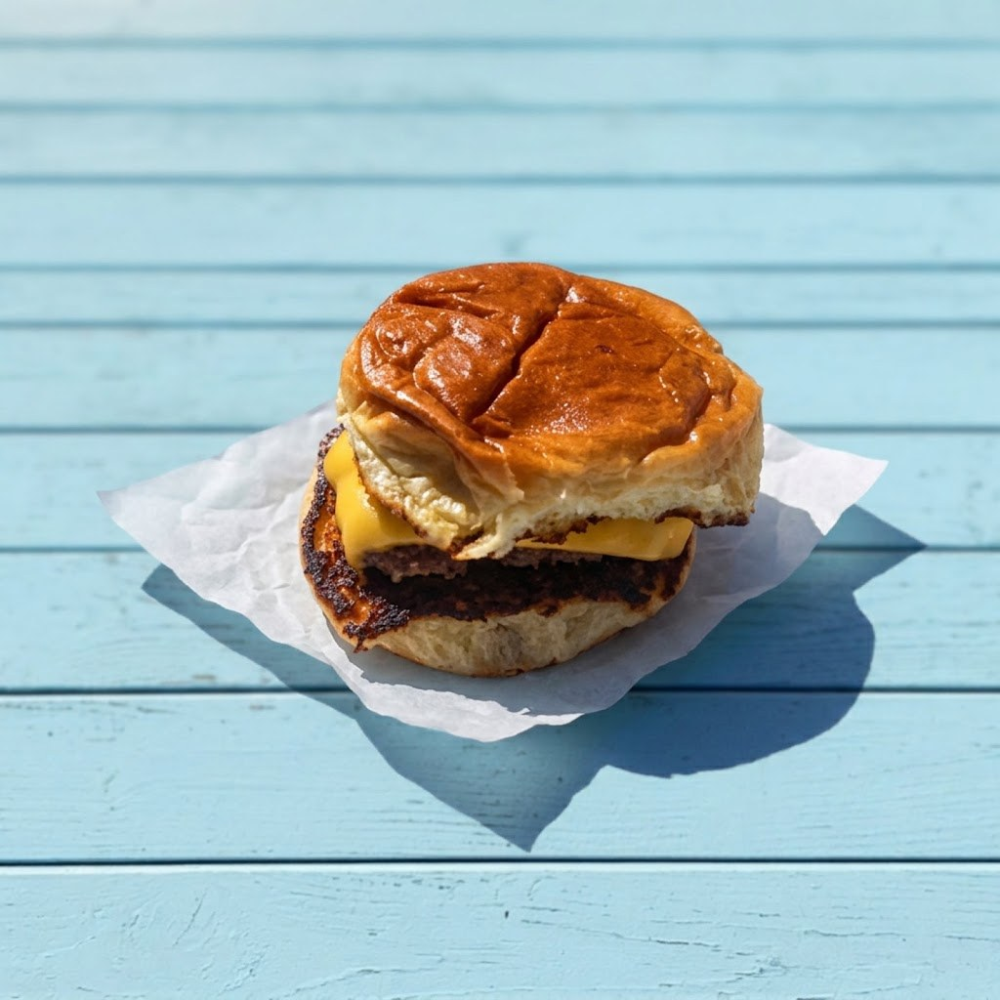
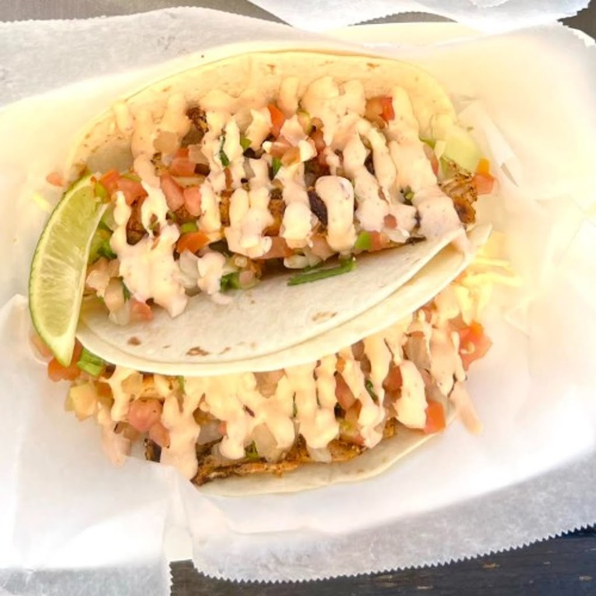

Menu
About the shack
Sea Level is a beachside burger and taco shack on Pass Christian Harbor at South 3 Hiern Ave in Pass Christian, Mississippi. The menu runs from the Sea Level Burger with double Angus patties to blackened shrimp tacos, mahi-mahi tacos, sliders, gouda mac and cheese bites, and fresh lemonade. Online ordering is available on the restaurant’s own site. The patio is pet-friendly, with live music and sunset views. Hours are daily, 11:00 AM to 8:00 PM. Call (228) 493-5999 or email sealevelpch@gmail.com to order.
On the harbor
Sea Level sits on Pass Christian Harbor with a pet-friendly patio, live music, and sunset views over the water. Online ordering is available on the restaurant’s own site. Call (228) 493-5999 to order.
Gallery


All three photos are real photos from the business's Google Maps listing. They show the turquoise beach shack on stilts with picnic tables and string lights, a cheeseburger with fries on a blue wooden table, and two soft tacos with sauce, pico de gallo, and a lime wedge.
Visit
Address: South 3 Hiern Ave, Pass Christian, MS 39571
Hours: Daily, 11:00 AM to 8:00 PM.
Phone: (228) 493-5999
Email: sealevelpch@gmail.com
Contact
Call (228) 493-5999 Email sealevelpch@gmail.com
Sea Level serves Pass Christian, MS. Questions? Call (228) 493-5999.